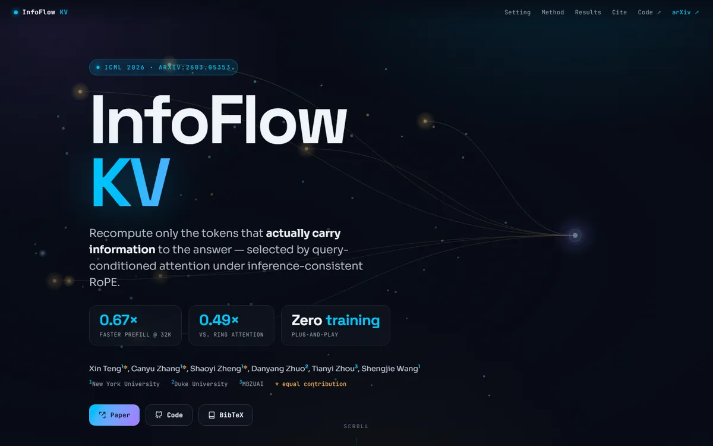

InfoFlow KV: Information-Flow-Aware KV Recomputation for Long Context
A mission-control console at night: cyan signal lines converge on one glowing node while amber sparks drift through the dark.

Checked against the rendered page. Hero stat numbers count up on load; the screenshot shows mid-animation values (1.02x, 0.75x) while the markup's final values are 3.49x and 2.57x. Sections have no side gutter below 920px.
Why it is here
A distinct dark identity: an animated particle and flow-line field, a large grotesk title with a cyan second line, mono metadata chips and three stat tiles. The first screen is composed with real intent, though the hero is very tall.
Overview
Color Palette
Typography
Space Grotesk
InfoFlow KV: Information-Flow-Aware KV Recomputation for Long Context
Abstract · Method · Results · BibTeX — 0123456789
Sora
InfoFlow KV: Information-Flow-Aware KV Recomputation for Long Context
Abstract · Method · Results · BibTeX — 0123456789
JetBrains Mono
InfoFlow KV: Information-Flow-Aware KV Recomputation for Long Context
Abstract · Method · Results · BibTeX — 0123456789
Spacing & Shape
Page Modules
Guidelines
More like this

CRAFT: Training-Free Cascaded Retrieval for Tabular QA
A tidy product manual in pale blueprint blue, where every stage wears its own colored edge.

Efficient Self-Evaluation for Diffusion Language Models via Sequence Regeneration
A tidy stack of rounded cards washed in a blue-violet-apricot dawn, signed with a gradient wordmark.

FIGMA: Towards FIne-Grained Music retrievAl
A music journal on warm paper: a heavy Newsreader headline under a red kicker, big red serif numerals for the results, and figures resting in soft cream frames.

GuideDog: A Real-World Egocentric Multimodal Dataset for Blind and Low-Vision Accessibility-Aware Guidance
A quiet monograph page: one serif column, oxblood ink for the links, and a table that blushes only at its own row.

LaMI: Augmenting Large Language Models via Late Multi-Image Fusion
A careful conference handout: Noto Serif headings, navy outlined buttons and soft grey bands taking turns.

PairCoder++: Pair Programming as a Universal Paradigm for Verified Code-Driven Multimodal and Structured-Artifact Generation
A crisp white product page: a blue announcement strip, ink-black pill buttons and every figure on a soft-shadowed card.